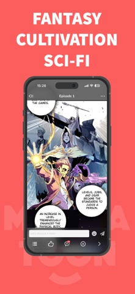

MangaToon 深度盘点：从阅读器到作者平台，它到底能做什么
MangaToon 远不止一个免费漫画阅读器——多端同步、积分体系、作者投稿通道构成了完整生态，本文从能力域全面拆解这款产品的真实面貌。
它是什么，为什么值得认真盘点
MangaToon 的官网给自己的定位很清晰：全球范围内的漫画与小说内容平台。用户侧是一个免费阅读应用，创作者侧开放投稿通道，平台中间做翻译、分发和商业化变现——这一套组合拳在海外市场跑了多年，积累了相当规模的读者和作者生态。
国内读者对 MangaToon 的了解往往停留在"一个看漫画的 App"这个浅层认知上，但如果真用过一段时间就会发现，它的产品设计比普通的漫画阅读器要厚得多。从阅读器内的细节打磨，到跨设备的同步机制，再到面向创作者的投稿体系，每一块都值得单独展开。
阅读器核心体验：把细节做到位才叫体验
MangaToon 的阅读器是整个产品里打磨最久、也最能体现设计取舍的地方。几个核心能力值得拎出来说。
亮度与护眼的双层设计。 点进任意章节，屏幕中间一点就能呼出工具栏，太阳图标拖亮度、一键切夜间模式，标准操作。有意思的是手势调光——左侧边缘上下滑动直接调亮度，不用呼出工具栏。这个功能默认是关的，需要去"阅读器设置"里手动打开，但打开之后基本就回不去了，尤其是夜间关灯看漫的时候。
夜间模式的反色效果黑白漫出彩、彩色漫翻车，这是所有反色方案的通病，MangaToon 也不例外。官方社区和评论区里能看到大量用户反馈这个问题，目前平台也没做针对性优化——如果你主要看彩色漫，老老实实调亮度到 30% 以下比什么模式都靠谱。另外 MangaToon 的小说（NovelToon）板块和漫画板块亮度设置是独立的，小说还支持米黄、浅灰、深黑几种背景色切换，漫画阅读器只有亮度和夜间模式两个选项，两边功能层级不一样，别搞错了。

章节导航的效率设计。 点击屏幕中间呼出工具栏之后点目录按钮就能看到完整章节列表，正在读的章节高亮，每章旁边还标着更新时间——追更党一眼就能看出来这部漫是日更、周更还是随时断更。上一章下一章的切换方式有三层：左右边缘点击、滑到章尾自动出下一章按钮、进度条拖动定位。目录列表还支持章节名关键词搜索，长篇连载里找某一章特别实用。
锁定章节的展示很直观——锁图标加"需要 XX 积分/阅读券/金币"，不会让你点进去之后才发现要付费。追更到最新一章时如果下一章已经更新，部分热门漫画会自动预载，体验上少了一次加载等待。
多设备同步：解决的真问题
MangaToon 的云同步机制解决的是"经常跨设备切着看"的用户痛点——手机刷了一会儿地铁，到家想躺沙发上用 iPad 接着看，进度直接跳回手机看到的那一页就行，不用记章节号也不用手动找"继续阅读"。
同步的内容范围比想象中宽：章节号精确到页、收藏夹列表、书单、评论和发帖记录。但有两个东西不同步值得注意——离线下载的漫画文件和阅读历史时间戳。前者意味着换设备不会自动帮你下载，得自己重新下；后者对于想回看"上次是什么时候看的"这个信息的用户来说是个小遗憾。
同步生效有三个前提：登录同一个账号、有网络连接、多终端都支持。Android 和 iOS/iPadOS 三端同步体验相对成熟，网页端只部分支持，功能可能打折扣。同步延迟正常在几秒到十几秒内，如果另一台设备没更新，先确认账号和网络，然后完全退出重开——重开 Mangatoon 会触发一次强制同步。
这个功能对只在一台设备上看的用户其实同样有用——手机丢了或换新机，登录账号之后收藏和追更记录还在，不至于从零开始。
作者生态：从读者到创作者的入口
这是 MangaToon 和其他漫画阅读器最大的差异点之一。它不只是消费内容的平台，还开放了作者投稿通道，任何符合条件的创作者都可以把自己的作品发到 MangaToon 上，平台帮你做全球发行和翻译。
目前开放三种投稿类型：漫画（原创彩色条漫）、小说（普通小说或聊天故事剧本）、聊天故事。入口在 App 内"我 → 成为作者"，流程是填作品信息、上传第一章、等审核（1~3 个工作日），通过后发后续章节。版权上要求全部原创、不侵犯第三方知识产权，内容上不允许色情暴力和违法违规，画风质量和题材市场潜力是审核重点——平台明显偏向恋爱、玄幻、都市这些热门题材。
分成方面，MangaToon 官方没有公开具体比例，但签约作者会和平台签订分成协议，收入来源包括读者金币解锁、广告分成、付费订阅等。非签约作者可以自由发布但不享受分成。投稿渠道除了 App 内，还可以发邮件到 contribute@mangatoon.mobi 或者走网页端 mangatoon.mobi/contribute。
对国内创作者来说，这个通道的实际价值是海外多语言发行——平台自带翻译和全球分发能力，对于想试水海外市场的漫画和网文作者来说是个门槛不高的切入点。具体投稿的分类规范和详细要求可以去mangatoon文档查查。不过官方也给了实用建议：彩色条漫优先（黑白竞争力差很多），先投短篇试水不要上来就连载长篇，先在平台上看看同类作品的画风和题材了解读者偏好。
短板也要说清楚
说了这么多好的，问题也不能回避。
网页端的功能完整性明显不如 App 端，尤其是多设备同步这块只部分支持，一些阅读器手势和设置在网页端也找不到。要完整体验还是装 App 比较好，安装包从官方下载拿就行。离线下载的漫画文件不跟随账号同步，换设备就得重新下，对于习惯在多设备之间切来切去但又想省流量的用户来说是个麻烦事。
夜间模式对彩色漫几乎是负优化——反色之后颜色严重失真，反而更累眼，平台至今也没做针对性适配。积分和金币两套体系的边界对新用户来说有点绕，解锁章节到底用哪个、看广告能换多少积分、充值金币的兑换比例，第一次接触的人大概率会晕一阵。
什么样的人该用它
如果你在下面这几类人群里，MangaToon 大概率值得认真用：
通勤+居家双场景的追更党。 手机地铁上刷、iPad 家里躺，进度跨设备无缝衔接这个核心痛点被解决了，其他阅读器要么没这个功能要么同步做一半，这一点 MangaToon 的体验是顶流水平。
想试水海外市场的漫画/网文作者。 门槛低、通道明确、平台自带翻译和分发，虽然分成比例不透明，但作为出海的第一站是个不错的选择——先让作品出去再说，后续要不要签约、要不要上更激进的平台可以再谈。
重度阅读的积分党。 MangaToon 的免费解锁体系（积分换、看广告换、金币直接买）设计得比较完整，愿意花点时间看广告攒积分的话，追热门连载的成本比纯付费平台低不少。当然如果你不差钱直接充值也能走通，两条路都留了。
整体来看，MangaToon 是一款在"免费"这个前提下把体验做厚了的产品。它没在收费上卡死用户，反而在同步、作者通道这些别人没做或没做好的地方投入精力，最终形成了一个读者和创作者双向拉通的完整生态。关于这款产品的资料我分别同步到了GitHub、Gitee 和 GitCode 三个仓库，方便不同网络环境下的读者查阅。